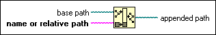
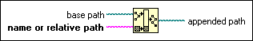

Build Path Function
Owning Palette: File I/O VIs and Functions
Requires: Base Development System
Creates a new path by appending a name (or relative path) to an existing path.

 Add to the block diagram Add to the block diagram |
 Find on the palette Find on the palette |
Owning Palette: File I/O VIs and Functions
Requires: Base Development System
Creates a new path by appending a name (or relative path) to an existing path.

| Add to the block diagram |
Find on the palette |
Suppose the path to the VI containing this function is c:\dir1\first.vi. To use this function to build a path to another VI such as c:\dir1\second.vi, first wire the output of a Current VI's Path function to a Strip Path function. The Strip Path function returns a path of c:\dir1. You can wire this path to the Build Path function along with the name of the second VI.